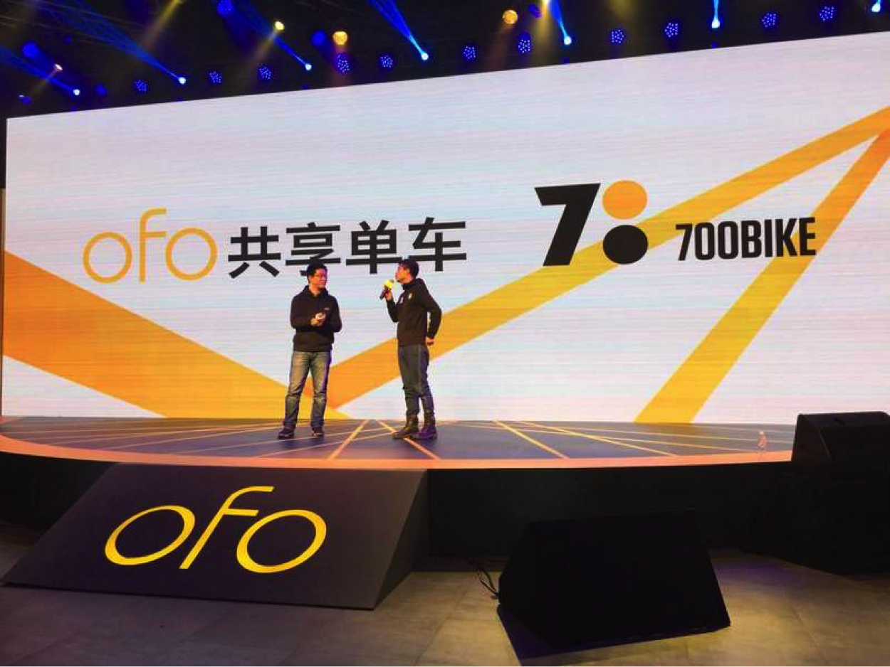
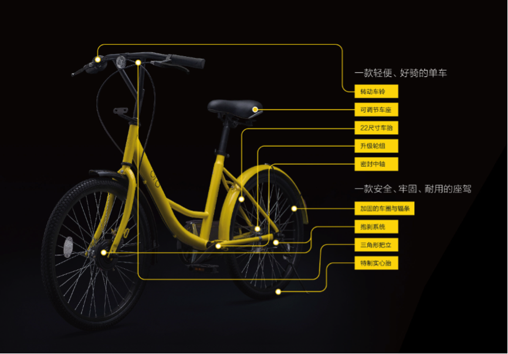

ofo宣布产品升级，与700Bike达成合作，确认原Uber西区北区经理张严琪加入任COO
今天，ofo宣布正式开启城市服务，介绍了其3.0版本的新款车，同时ofo发布了其城市战略，希望在年底连接100万辆车，同时ofo还宣布已经与700Bike达成合作。另外，前Uber中国北区西区总经理张严琪已经加入共享单车平台“ofo”，担任COO，与张严琪同期加入ofo的还有Uber其他一些大区经理。
先说3.0版小黄车
我们此前曾在ofo宣布C轮融资时，介绍了ofo的3.0版本新车。ofo对车身进行了硬件升级，比如采用了转动车铃（摩拜单车也采用的这种车铃，不易损坏）、车把采用了三角形把立、22寸车轮（比原来的车圈小，转向更为灵活）、实心胎（摩拜单车也采用了实心胎，防爆防扎）、密封中轴（采取齿轮传动，替换了原来的滚珠中轴，骑起来更方便）、鼓刹（克服刹车皮损坏问题，提高安全性），此外，小黄车还采用了可调节车座、以及加固的车圈。
此外很重要的是，新版本小黄车升级了密码锁，从原来的方盘式摁键密码锁（有210种开锁密码）升级为圆柱式转盘密码锁（有一万种开锁密码）。开锁密码多了，小黄车被猜出密码的可能性就会变小（目前已几乎不可能，除非撬锁）。戴威表示，对车辆本身和密码锁进行硬件升级后，整车成本将从原来的200元上升到300元左右。
城市战略：
ofo计划在年底链接100万辆单车，同时宣布在22座城市开展服务。戴威提到，ofo的C轮融资还一分未动，目前使用的是其B轮融资，现金流健康，并在部分区域实现了盈利。戴威表示，以目前的现金流，ofo就可以实现城市的快速扩张，包括产品的迭代和研发，以及对供应链的补足。
之所以称之为“连接”，是因为接下来ofo将开启C端和B端的共享，对C端，ofo将鼓励用户把手中的车放到平台上，先期在北京和上海开展试点。对B端，ofo将建立一个开放平台，鼓励自行车生产商和其他自行车运营平台方接入，ofo为其进行流量支持。
引入高管：
ofo正式宣布，前Uber中国北区西区总经理张严琪已经加入共享单车平台“ofo”，担任COO，戴威特别强调，与传言不同，张严琪并非滴滴钦定派过来的，而是自己请过来的。
张严琪今年30岁，是原中国优步北区西区总经理，负责中国优步30个城市的业务。在今年8月份滴滴优步合并后，张严琪与南区总经理罗岗离开优步加入滴滴，分别负责滴滴的汽车后市场业务和加油业务。现在看来，时隔三个月，张严琪又将离开滴滴踏上新的征程。
张严琪作为COO加入ofo，或将把Uber中国的运营经验反哺给ofo，这对ofo来说也是一个不小的加持。
此前ofo已在短短几个月发布了五轮融资消息，今年2月，ofo完成由金沙江创投领投，东方弘道跟投的A轮融资，两个月后，真格基金、天使投资人王刚等又联合注资A+轮。今年9月份，ofo宣布获经纬中国数千万美元B轮融资，又在同月宣布获得滴滴的C1轮战略融资。